Common name : White mangrove
Common name in Tamil : Upattha
Common name in Telugu : Nalla mada
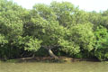
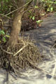
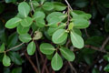
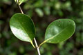
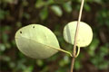
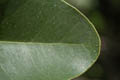
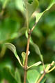
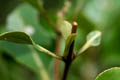
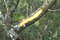
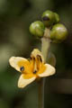
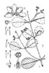
Diagnostic characters
Botany & morphology
Regeneration
Reproductive biology
Ecology
Distribution
Uses
Null
Large sized tree, often more than 10 m tall, with dense and broad crown; buttress small around the base of the trunk; pneumatophores numerous pencil-like erect roots usually less than 30cm height, developed from horizontal roots buried in the substrate; bark white. Leaves obovate or ovate-oblong with round apex, turn black when dry. Flowers orange - yellow; fruits almond-shaped.
Leaves simple, opposite, shortly petiolate, broadly ovate-oblong or obovate, entire, obtuse or rounded at apex, tapering or attenuate at base, 10 – 6 cm x 3 – 6 cm, coriaceous, glabrous, shining above, glaucous beneath.
Inflorescence terminal or axillary congested cymes with flowers in trichotomous sessile heads, peduncles 8 – 15 cm long.
Flowers small, bisexual, orange-yellow; sepals 5, short; corolla 4 lobed; stamens 4, exserted; ovary tapering and as long as the style, stigma bifid.
Fruits almond shaped capsule, broadly ovoid, compressed, apex beaked, densely covered by silvery papillose.
Seeds dark-green, shining, pubescent on one side, often germinating on trees.
The pneumatophores usually remain unbranched, but are capable of branching when damaged. The surface texture is smooth and spongy including chlorophyll in the subsurface layers.
Bark is quite smooth, grey to dark brown in color and lenticellate. Above the buttress tree may develop a belt of adventitious roots.
Tree development is conforming with Attim’s model, which is frequent in trees living in relatively uniform environment of tropical mangroves (also known in other genera like Rhizophora, Ceriops, Lumnitzera, Sonneratia).
Cryptovivipary. The fruit is still shed as a unit, but the pericarp splits immediately or even at the time of detachment. Germination is epigeal.
Pollination by short-tongued insects and honeybees.
Dispersion by water, and the propagule (fruit, seed or seedling) has some initial ability to float.
It is the pioneer species growing on newly formed mud flats near river mouth.
The greatest density of Avicennia is found in the region in contact with the « Rhizophora zone ». It form groups of all sizes, grows near the canals but always behind the « Rhizophora zone » with few halophytic species.
Indian Ocean, Burma, Sri Lanka, Malaysia, Java, China and in the islands of Pacific.
Bark used for treating skin parasites and gangrenous wounds; salt is extracted from wood ash; resin and ointment from seeds are applied to ulcers and tumors; leaves are used as fodder and fuel; wood for house building and boat making.
Top of the page